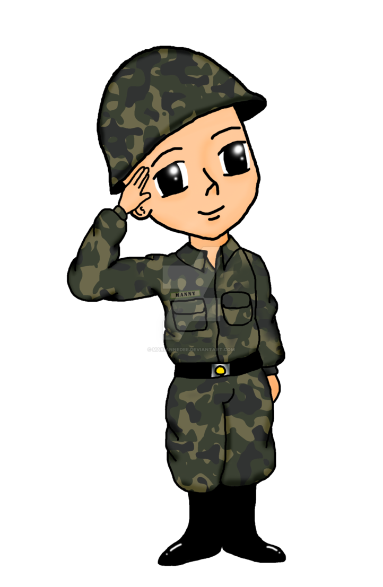

Армия

Она единственный человек, кто был со мной всегда. Она всегда была рядом... Всегда.... Я дурак
Много событый в моей жизни произошло. Веб-разработка, жирные заказы, надежда на становление хорошим человеком. И я совсем упустил учёбу.
И вот я уже жду отправление в армию (опустил моменты некоторые). Ты не говорила, что испытывала в этот момент вроде. Но, наверно, я представляю.
Я тогда был полностью пуст, как будто всё, жизнь закончилась. Я не доломал себя, армия меня доломает. Хоть по итогу армия и сломала мою жизнь, но дала нечто гораздо ценной, чем то, что было.
Я ни с кем не общался в армии(на воле так сказать, ну кроме мамы). Я видел как другие мило общаются со своими девушками и мне становилось очень плохо, я как будто не мог позвонить никому. Я считал, что упал в глазах всех и не мог просто позвонить кому-либо, дабы ещё больше не унизить себя.
Но в какой-то момент я уже не мог, я очень хотел с кем-то пообщаться, узнать как дела. Единственным светлым человеком, которому я мог рассказать всё, в моей жизни была ты. Я попросил маман взять твой номер и скинуть мне. И вот я тебе позвонил, или написал, я чево-то уже не помню.
Но мы возобновили общение, и как же ты поддерживала меня, общалась со мной. Снова спасла меня от одиночества, от прогрызания себя изнутри. Я говорил тебе о своих мыслях, своих делах, своих состояниях и ты в свою очередь рассказывала про свою жизнь. Мне так хорошо было осознавать, что у меня есть человечек, которому я даже такой нужен, который даже так со мной общается не смотря ни на что.
Через пару месяцев у меня появилась интересная мысль. Ты всегда была рядом, ты всегда поддерживала меня, давала сил. Может быть ты та самая? (Так и есть, маленькая моя, хы).
Но чёт она промелькнула так быстро, я даже и не понял. Но потом снова эта мысль и снова, и снова. Я уже представлял как мы будем вместе. Ты скидывала мне фотографии, я улыбался. Даже друзьями там рассказывал о тебе. Они спрашивали "может у вас что-то получится?", я отвечал та ладно вам. Но на самом деле и я так думал.
За время армии ты даже не представляешь, какую важнейшую роль играла для меня, я переосмыслил всё. Я наконец-то всё понял.
А помнишь, когда я тебе в патруле звонил? Хах, я так был рад с тобой поговорить, там какие-то воздушные тревоги, сказали могут проникновения быть и т.д., а я общался с тобой и в голове только были мысли, что тебе дальше сказать, о чём поговорить.
Просто ты удивительная. Ты была со мной всегда, расстояние тут не важно, ты всегда даже на расстоянии была рядом. В с е г д а.
Я пересматривал сотни раз твои фотографии, которые ты мне присылала и строил воображения. Так хотелось, чтобы ты больше кидала их, ты мне так нравилась (а чичас просто нереально как).
Самое главное хоть и не в отношениях, ты была со мной, рядом...
Не устала читать, солнце? Отдохни и перелистывай, хех